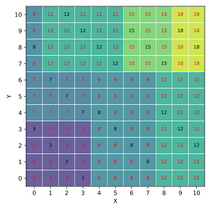
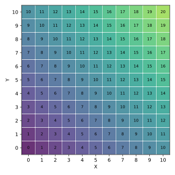

Machine Learning and Data Mining (Module 2)
Fundamentals of Machine Learning
Data Mining
Data mining (Chakrabarti et al. 2006)
- … Is the process of extracting and discovering patterns in large data sets
- … Involving methods at the intersection of machine learning, statistics, and database systems.
- It is an interdisciplinary subfield of computer science and statistics

AI, Data Mining, and Machine Learning
Classical Programming vs Machine Learning


Classical Programming

Training the model
Experience: training data

Testing the Model
Performance: checking accurate predictions


What is machine learning?
Implementing a Machine Learning Algorithm

Example of a Decision Tree

The Perfect Model … in 3D
\(Error = Z - Z'\) (if blue, \(Z > Z'\))
- \(Z = X + Y\)
- \(Z' = model(X, Y)\)

(Small) Decision Tree

(Small) Decision Tree… in 2D
Predicting the test data

Predicting the whole data

(Small) Decision Tree… in 3D

Linear Regression
Model: \(Z = \alpha X + \beta Y + \epsilon\)
- \(\alpha\) and \(\beta\) can be fitted (learned) using ordinary least squares (OLS)
- Best fit?
Generalization
What if we ask the models the result of 12 + 12?


Generalization: AutoML